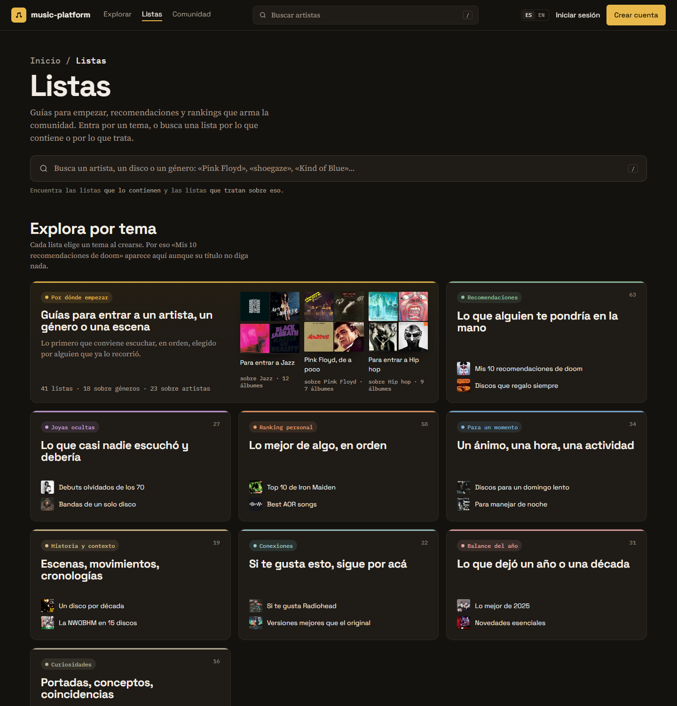

A · Puertas
La portada es un índice de temas. Cada tema es una puerta a su propia página (/lists/temas/<tema>) con filtros laterales por «sobre», género, década y tipo.
A favor
- Responde de un vistazo «qué tipo de listas hay»
- URLs por tema, fáciles de compartir e indexar
- Funciona bien con pocos datos: las puertas siempre existen
En contra
- La búsqueda queda como un accesorio
- Dos niveles antes de ver una lista
- Con un tema vacío, la puerta promete y no cumple